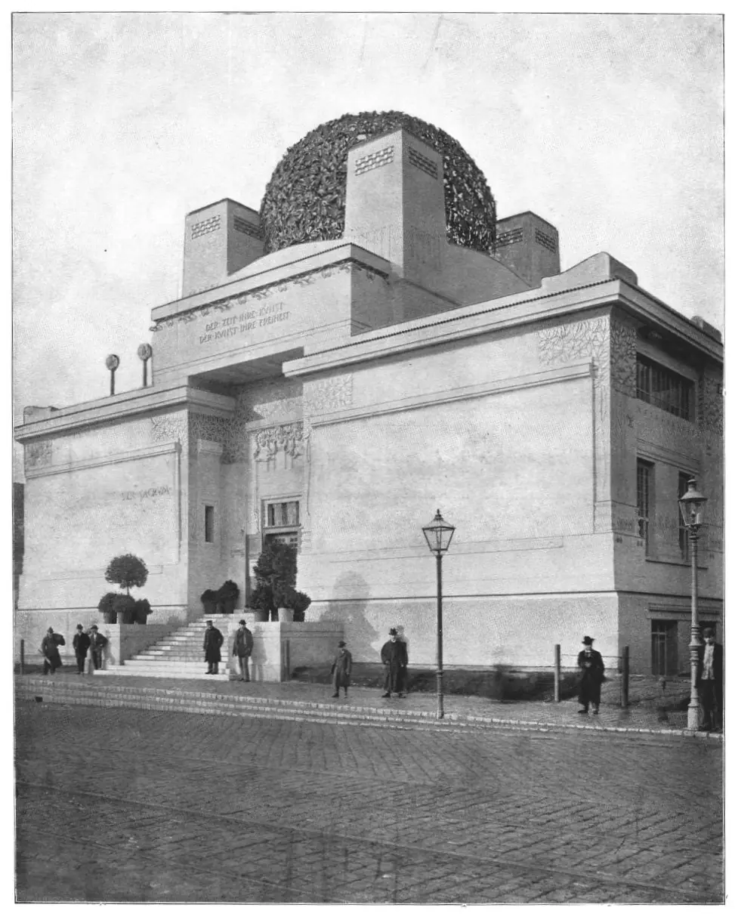

Vienna, 1900
Mahler, Klimt and the loosening of a musical centre
Klimt’s Beethoven exhibition brought Mahler into the Secession; Schoenberg’s Second Quartet later carried a soprano beyond dependable tonal bearings. Follow those documented connections through the Adagietto, a Mahler song and Entrückung, keeping Freud’s Vienna distinct from an invented psychological explanation of the notes.
Begin when you are ready. The stations follow the music; pause whenever you want to read.A new building, an old key
Gustav Mahler · Symphony No. 5
IV. Adagietto — Sehr langsam
The Secession’s exhibition house was completed on 29 October 1898, after six months of construction. Joseph Maria Olbrich gave the artists a glass-roofed exhibition hall behind the entrance and its gilded dome: a purpose-built place to change how art was shown. The music here is not an opening ceremony. It is Mahler’s Adagietto, composed for the Fifth Symphony in 1901–02, with strings and harp replacing the surrounding movements’ larger orchestra. Its F-major opening supplies a point of reference that the long, leaning phrases repeatedly delay. Keep that audible centre in mind: Schoenberg’s finale will make its availability, rather than merely its colour, uncertain.
Let the music lead you into this station.
Sources & recording
Peabody Symphony Orchestra, Baltimore
Excerpt 0:00–4:36 · Full recording & listening notes
- Vienna Secession: building history and Olbrich’s design ↗
- Commons: Secession building around 1900 — historical photograph and public-domain status ↗
- Mahler, Symphony No. 5, IV: Peters full score, pp. 178–182 ↗
- Mahler Foundation: Adagietto, scoring and form ↗
- Follow the sustained melodic line across changing harmony; the phrase lasts longer than any single attack.
- Listen for leaning notes that delay rest before moving towards a chord tone.
- The opening’s broad swell withdraws again; follow the quieter space after its crest.


Places on record · 1900
- Vienna · worked · documented
1897–1907
Directed the Hofoper; also led the Vienna Philharmonic from 1898 to 1901.
- Maiernigg · lived · documented
1900–1907
Composed in his summer-house hut on the Wörthersee.
- Paris · travelled · documented
1900
Conducted the Vienna Philharmonic at the Paris Exposition.
Present-day coastline; records do not establish continuous residence.
Open this year on the Map →Klimt’s Beethoven, Mahler’s conducting
Gustav Mahler · Symphony No. 5
IV. Adagietto — Sehr langsam
In April 1902 the Secession assembled twenty-one artists around Max Klinger’s Beethoven statue. Klimt’s frieze translated a reading of Beethoven’s Ninth Symphony into painted walls, ending with an embrace and Schiller’s appeal to the whole world. Mahler conducted a wind arrangement from the Ninth’s finale at the opening on 14 April. That is the concrete connection between conductor and exhibition; the Adagietto playing here was not the exhibition music. Its middle section is marked Fließender, more flowing, and moves beyond F major while the harp largely withdraws. Painting and music share a historical setting, not a demonstrated system of matching colours and chords.
Let the music lead you into this station.
Sources & recording
Peabody Symphony Orchestra, Baltimore
Excerpt 4:36–6:55 · Full recording & listening notes
- Vienna Secession: the 1902 Beethoven exhibition and the frieze’s programme ↗
- Mahler Foundation: XIVth Secession exhibition and Mahler’s 14 April performance ↗
- Mahler Foundation: the Adagietto’s middle section ↗
- Commons: Klimt’s concluding Beethoven Frieze panel ↗
- The more flowing middle moves away from the opening’s F major; follow continuity within the changed harmony.
- Listen across this middle-section swell and retreat rather than treating its crest as a new section.

Places on record · 1902
- Vienna · worked · documented
1897–1907
Directed the Hofoper; also led the Vienna Philharmonic from 1898 to 1901.
- Maiernigg · lived · documented
1900–1907
Composed in his summer-house hut on the Wörthersee.
- Krefeld · premiere · documented
1902-06-09
Conducted the first complete Third Symphony.
Present-day coastline; records do not establish continuous residence.
Open this year on the Map →A love letter, with a witness
Gustav Mahler · Symphony No. 5
IV. Adagietto — Sehr langsam
Willem Mengelberg annotated his score with the story that Mahler sent the Adagietto to Alma Schindler as a declaration of love. His annotation is evidence that he told the story, not independent proof of the exchange. The distinction matters when biography tempts us to make a phrase stand for a private event. What the score establishes is a return: the slow opening material and harp recover the foreground, then grow into a larger swell before F major settles. Hear how the restored melody still carries delayed resolutions. Recognition does not erase tension; familiar material must complete its harmonic work before the final resonance fades.
Let the music lead you into this station.
Sources & recording
Peabody Symphony Orchestra, Baltimore
Excerpt 6:55–10:21 · Full recording & listening notes
- K. Dawn Grapes, Fort Collins Symphony: Mengelberg’s annotation ↗
- Mahler, Adagietto: Peters full score ↗
- Commons: the Peabody Symphony Orchestra recording used here ↗
- The opening material returns; compare its long phrases with the first station.
- The returning phrase grows into the largest broad crest of this recording.
- Follow the closing withdrawal into resonance rather than stopping at the last strong phrase.
Before the quartet acquired words
Gustav Mahler · Symphony No. 2 “Resurrection”
IV. Urlicht — Sehr feierlich, aber schlicht
Before Schoenberg added a soprano to his quartet, Mahler had placed an alto inside the Second Symphony. Urlicht sets a poem from the 1808 second volume of Des Knaben Wunderhorn; an early orchestral manuscript ends ‘Steinbach / 19 Juli 1893’. The song existed before Mahler chose its symphonic place. Here one vocal phrase stands beside measured, hymn-like brass chords, and the subsequent accompaniment moves beneath the sustained voice. Klimt’s later painting names the same lake, Attersee, but supplies no evidence of musical borrowing. Listen to this vocal-and-instrumental relationship before the different balance of five independent performers in Entrückung.
Let the music lead you into this station.
Sources & recording
Barbara Schubert, the DuPage Symphony Orchestra
Excerpt 0:00–2:40 · Full recording & listening notes
- Mahler Foundation: Urlicht manuscript, earlier song and symphonic setting ↗
- Deutsches Textarchiv: Des Knaben Wunderhorn, volume II, 1808 ↗
- Commons: Klimt, Attersee, 1900 ↗
- Compare the single vocal line with the measured, hymn-like brass chords around it.
- Follow the accompaniment beneath sustained singing: a held vocal note need not mean stationary harmony.

Places on record · 1893
- Hamburg · worked · documented
1891–1897
Led the Stadttheater and composed Wunderhorn songs.
- Steinbach am Attersee · lived · documented
1893–1896
Spent summers composing in a lakeside hut, completing the Second and Third symphonies.
Present-day coastline; records do not establish continuous residence.
Open this year on the Map →The tonic no longer guides
Arnold Schoenberg · String Quartet No. 2, Op. 10
IV. Entrückung — Sehr langsam
Schoenberg’s Second String Quartet, written in 1907–08, reaches its most unsettled harmonic territory in the finale, Entrückung. The introduction suspends the ordinary feeling of a governing key, though fifth relationships still organise its pitches. This is an early crossing towards atonality, not the later twelve-tone method and not a claim that tonal references disappear everywhere. Unlike the Adagietto, the opening gives us no immediately dependable home to measure departures against. Follow a short contour through changes of register instead: relationships between moving lines can connect the passage when a familiar cadence does not.
Let the music lead you into this station.
Sources & recording
Carmel String Quartet; Rona Israel-Kolatt, soprano
Excerpt 0:00–1:14 · Full recording & listening notes
- Therese Muxeneder, Arnold Schönberg Center: Quartet No. 2, introduction and tonal organisation ↗
- Arnold Schönberg Center: compositional chronology ↗
- Follow the chromatic string lines without expecting an immediate home-key cadence.
- Vienna · worked · documented
1903–1911
Taught privately and at the Schwarzwald School; Berg and Webern became pupils.
Present-day coastline; records do not establish continuous residence.
Open this year on the Map →Air from another planet
Arnold Schoenberg · String Quartet No. 2, Op. 10
IV. Entrückung — Sehr langsam
‘Ich fühle Luft von anderem Planeten’ — ‘I feel air from another planet’ — begins Stefan George’s poem. Schoenberg chose Litanei and Entrückung from George’s 1907 collection Der siebente Ring for the quartet’s last two movements. The soprano therefore enters a genre’s instrumental ensemble without turning every string line into chordal accompaniment. Schoenberg’s performance instruction asks that the voice stand out by timbre rather than loudness. Listen for a fifth melodic participant among two violins, viola and cello. The words name a departure; the music has already loosened its tonal bearings before the poem begins.
Let the music lead you into this station.
Sources & recording
Carmel String Quartet; Rona Israel-Kolatt, soprano
Excerpt 1:14–2:48 · Full recording & listening notes
- Arnold Schönberg Center: George’s poems, scoring and Schoenberg’s balance instruction ↗
- Commons: Carmel Quartet and Rona Israel-Kolatt, 2007 recording ↗
- Across the first vocal span, hear the soprano as a melodic participant among the strings, not above a single accompaniment.
- Follow one line through register changes, then another; contour supplies landmarks where a home key is uncertain.
A listening room and a consulting room
Arnold Schoenberg · String Quartet No. 2, Op. 10
IV. Entrückung — Sehr langsam
At Berggasse 19, Freud’s waiting room hosted the Wednesday Psychological Society from 1902. Six years later the Rosé Quartet and Marie Gutheil-Schoder introduced Schoenberg’s Second Quartet in Vienna. Schoenberg’s account, written in 1936–37, remembers laughter beginning in the second movement and continuing through the George settings. These are two documented rooms in the same city, not evidence that psychoanalysis caused the harmonic break. The distinction directs attention back to the sounding work: short shapes can survive changes of rhythm and register, and successive swells can organise a passage without a conventional return to a tonic. Follow those connections rather than assigning a diagnosis to dissonance.
Let the music lead you into this station.
Sources & recording
Carmel String Quartet; Rona Israel-Kolatt, soprano
Excerpt 2:48–5:52 · Full recording & listening notes
- Sigmund Freud Museum: Berggasse 19 and the Wednesday Psychological Society ↗
- Arnold Schönberg Center: motivic organisation and Schoenberg’s retrospective premiere account ↗
- Keep a short melodic shape in mind as rhythm and register change; a settled tonic is not the only connection.
- This stretch approaches a brief forceful crest, then withdraws into quieter phrases.
- Closely spaced attacks gather force before another retreat; follow the space left after the surge.
The meeting was in Leiden
Arnold Schoenberg · String Quartet No. 2, Op. 10
IV. Entrückung — Sehr langsam
Mahler did consult Freud, but not in the Viennese rooms just described. They met in Leiden on 26 August 1910 during a crisis in Mahler’s marriage; Ernest Jones’s biography of Freud reports a four-hour walk. That meeting postdates both the Adagietto and Schoenberg’s quartet. It cannot serve as their compositional cause, and its later recollections are not a recording of the conversation. Keep this historical distance while the quartet quietly restarts and gathers two further waves. The music’s reduced level does not suspend interaction: small movements accumulate before the next crest, then retreat again before the closing instrumental paragraph.
Let the music lead you into this station.
Sources & recording
Carmel String Quartet; Rona Israel-Kolatt, soprano
Excerpt 5:52–7:52 · Full recording & listening notes
- Mahler Foundation: the 26 August 1910 Leiden consultation and Jones’s account ↗
- Arnold Schönberg Center: Quartet No. 2, composition dates and instrumental coda ↗
- Commons: the quartet recording used here ↗
- Listen through the quiet restart for small movements that accumulate before the sound regains weight.
- The later span rises, withdraws and rises again; the first crest is not the ending.
- Dobbiaco · lived · documented
1908–1910
Returned each summer to compose near Toblach.
- New York City · worked · documented
1908-01–1911-04
Conducted the Metropolitan Opera, then the New York Philharmonic from 1909.
- Leiden · travelled · documented
1910-08
Consulted Sigmund Freud during a walking conversation.
- Munich · premiere · documented
1910-09-12
Conducted the Eighth Symphony at the Neue Musik-Festhalle.
Present-day coastline; records do not establish continuous residence.
Open this year on the Map →A destination, not the old route
Arnold Schoenberg · String Quartet No. 2, Op. 10
IV. Entrückung — Sehr langsam
After the soprano finishes, the strings continue alone. Schoenberg remembered this coda being heard without the interruptions that had accompanied the vocal movements at the premiere. The quartet ultimately reaches F♯ major, answering the F♯ minor in which the whole work began; its route has nevertheless suspended tonal bearings for substantial stretches. The break is therefore audible without pretending that every old relation has vanished. A further connection survives in print: Schoenberg dedicated his 1911 Harmonielehre to Mahler’s memory. Follow the final harmony and decay, then distinguish the recording’s remaining room sound from a new musical event.
Let the music lead you into this station.
Sources & recording
Carmel String Quartet; Rona Israel-Kolatt, soprano
Excerpt 7:52–10:27 · Full recording & listening notes
- Arnold Schönberg Center: coda, tonal ending and 1936–37 recollection ↗
- Contrapunctus recording guide: Entrückung’s F♯-major ending and timing evidence ↗
- Universal Edition: Harmonielehre and its dedication ↗
- Mahler Foundation: Schoenberg’s relation to Mahler ↗
- Across the closing span, the strings continue the argument after the poem has run its course.
- The closing paragraph leads towards F♯ major, despite the finale’s unconventional harmonic route.
- Listen for the final major harmony and its decay; later recorded activity is not identified as another musical phrase.
Use Begin to start the music.
← → stations · Space pauses · Swipe to turn the page